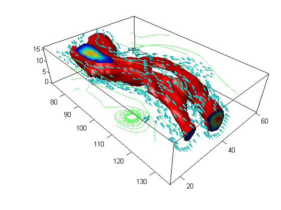

This is an example of how to create wind flow visualization in MATLAB®.
Read about the isosurface, isonormals, isocaps, coneplot, streamline, patch, and reducepatch functions in the MATLAB® documentation.
Go to MATLAB Plot Gallery
% Load wind data load wind x y z u v w; % Compute speed spd = sqrt(u.*u + v.*v + w.*w); figure; % Create isosurface patch p = patch(isosurface(x, y, z, spd, 40)); isonormals(x, y, z, spd, p) set(p, 'FaceColor', 'red', 'EdgeColor', 'none'); % Create isosurface end-caps p2 = patch(isocaps(x, y, z, spd, 40)); set(p2, 'FaceColor', 'interp', 'EdgeColor', 'none') % Adjust aspect ratio daspect([1 1 1]); % Downsample patch [f, verts] = reducepatch(isosurface(x, y, z, spd, 30), .2); % Create coneplot (velocity cone) h = coneplot(x, y, z, u, v, w, verts(:, 1), verts(:, 2), verts(:, 3), 2); set(h, 'FaceColor', 'cyan', 'EdgeColor', 'none'); % Create streamline [sx, sy, sz] = meshgrid(80, 20:10:50, 0:5:15); h2 = streamline(x, y, z, u, v, w, sx, sy, sz); set(h2, 'Color', [.4 1 .4]); % Adjust colormap and axes settings colormap(jet); box on; axis tight; camproj perspective; camva(34); campos([165 -20 65]); camtarget([100 40 -5]); camlight left; lighting gouraud;